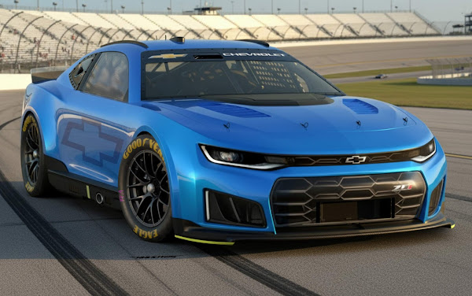
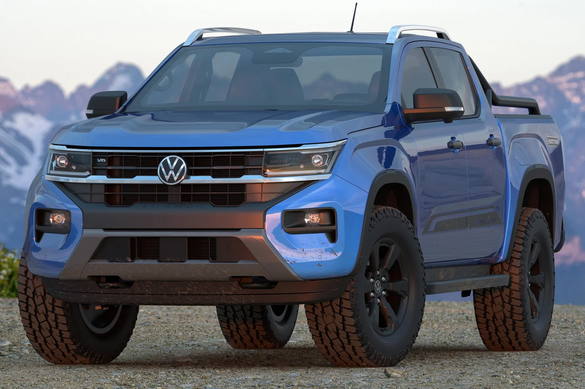

Preço Estimado (0km / Final de Produção) Camaro Collection/2024: As últimas unidades (série especial) tiveram preços anunciados entre R 595.000. Tabela Fipe (Previsão): Modelos 0km ou remanescentes podem constar na Fipe por valores próximos a R Principais Características Motorização: O clássico 6.2L V8 VVT DI, gerando aproximadamente 461 cavalos de potência e torque de 62,9 kgfm. Performance: Aceleração de 0 a 100 km/h em cerca de 4,2 segundos (na versão SS). Transmissão: Automática de 10 marchas com trocas no volante. Design: A série "Collection" é caracterizada por pintura exclusiva, numeração especial e detalhes de acabamento escurecidos.

A Volkswagen Amarok 2026, produzida na Argentina, retorna ao mercado brasileiro com preços que variam entre aproximadamente R 389.990 na tabela FIPE/anúncios, focando no motor 3.0 V6 TDI turbodiesel que entrega 258 cavalos de potência (podendo atingir 272 cv com overboost) e impressionantes 59,1 kgfm de torque. Como principal atualização mecânica para 2026, a picape V6 passa a utilizar Arla 32 (AdBlue) para controle de emissões, mantendo o câmbio automático de 8 marchas e tração 4x4 permanente. O modelo se destaca pelo alto nível de conforto, bancos ErgoComfort, faróis e grade iluminada em LED, além de seis airbags, nova cor Cinza Moonstone e central multimídia de 9 polegadas, mantendo-se como uma das referências em desempenho e dirigibilidade urbana/estrada na categoria.

A Mitsubishi L200 Triton 2026 representa a 6ª geração da picape no Brasil, com visual renovado, motor 2.4 turbo diesel de 205 cv e 47,9 kgfm de torque, e câmbio automático de 6 marchas. Focada em robustez e tecnologia, oferece tração 4x4 Super Select II, capacidade de carga de 1 tonelada, acabamento refinado e preços competitivos, com versões como a HPE e a Katana, posicionando-se como uma das opções mais eficientes em consumo no segmento.